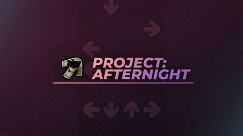
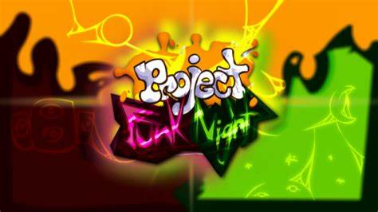

Meus projetos

Project Afternight: Um Jogo que foi minha Terapia
Uma recriação do jogo Friday Night Funkin' para Roblox, Sendo bem mais polido internamente , com novas pessoas atrás do projeto e com uma Engine propría feita com carinho.

Project Funk Night: O meu primeiro Jogo de sucesso
Este Jogo é outra recriação do Friday Night Funkin' mas ele é baseado na falecida Engine YAFN (Yet Another Funk Night). Ela foi feita com a permissão dos criadores originais da Engine do YAFN e foi um dos jogos que trabalhei por mais tempo.